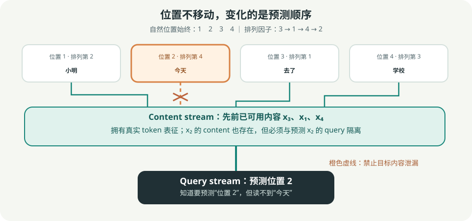

1. 为什么顺序是语言模型的一种限制
给定四个 token x₁=小明、x₂=今天、x₃=去了、x₄=学校，从左到右自回归目标通常按 1→2→3→4 分解概率。预测 x₂ 时只能条件于 x₁。BERT 的 MLM 则用含左、右上下文的 Encoder 预测被遮盖词，却在预训练输入中引入了特殊 [MASK]，而下游正常文本中没有这种占位符。
XLNet（Yang et al., 2019）不直接采用普通 MLM。它保留自回归的条件预测约束，同时让同一个固定位置的词，在不同训练排列里可能使用来自原句左侧或右侧的词作为条件。双向指跨多种因子分解捕获两个方向的信息，并不意味着某一次预测允许窥视所有位置的真实 token。
2. 排列的是预测因子，不是语序
例如原序列的自然位置依旧是 [1,2,3,4]，抽到的预测顺序可以是 3 → 1 → 4 → 2。这时预测 x₂ 已知位置 3、1、4 的 token；虽然有些位置在自然文本中位于 2 的右侧，但只要目标 x₂ 尚未进入条件集合，它的真实值就不能被使用。
绝不应该把它实现为“把汉字交换位置后送入普通 Transformer”；XLNet 训练保留自然的 token 位置及其相对位置信息，主要改变注意力可访问关系。位置是在哪里，排列排名是什么时候可以看见，这两个坐标系必须独立。

3. 为什么一个隐藏状态无法兼顾两种角色
假如某层位置 2 的隐藏状态从词嵌入 e(x₂) 开始，那么即使最后一层让位置 2“只注意之前的预测目标”，其残差路径也可能已经携带 x₂ 本身。直接拿这种状态预测 x₂，目标答案会从输入端进入预测端，这是 target leakage。
解决办法是把两种用途拆开：content stream 允许某位置表征自身的内容，可供排列顺序上后来出现的目标使用；query stream 表示“我要预测的是位置 i”，初始化不携带该位置的真实 token，只能读取允许条件化的先前 content。查询可以知道目标位置，不能知道目标词形。
4. 两条流在一层内如何更新
记排列为 z=(z₁,…,z_T)，当前目标 z_t。content stream 在位置 z_t 的 key/value 可来自排列中截至该位置的内容状态；query stream 作为 query，key/value 仅来自排列中严格更早的位置的 content stream。两个注意力掩码的对角线规则不同：content 允许当前 token，query 不允许当前 token。
可将单头抽象为：hᶫ[z_t] ← Attention(query=hᶫ⁻¹[z_t], key/value=hᶫ⁻¹[z≤t])；gᶫ[z_t] ← Attention(query=gᶫ⁻¹[z_t], key/value=hᶫ⁻¹[z<t])。这些是省略前馈、残差与相对位置项的计算示意，不是原实现逐行代码。批处理实现通常通过 permutation attention mask 和 target mapping 控制访问关系，而不是为每一种排列创建一个新的物理序列。
若同一位置既需要为其他词提供内容、又需要作为当前待预测目标，双流让这两种计算保持逻辑隔离。它比单个 Encoder 加一张统一 mask 更复杂，但解决的是可解释的因果约束。
5. 概率目标与张量形状
给定真实 token 序列 x=(x₁,…,x_T)，Z_T 为长度 T 的所有位置排列，排列语言模型最大化不同条件预测顺序下的期望对数似然。每项预测依赖先于目标的真实 token；不是“任意位置都彼此无条件独立”。
单层可把两个流都看作形状 [B,T,H] 的位置状态。对每个注意力头，query/key 为 [B,h,T,d]，d=H/h；可见性 mask 在位置维上决定某个目标行能访问哪些 key 列。不同位置、不同排列使用的掩码不同，不应与 padding mask 混淆。原论文还采用 partial prediction：在某个排列中只对后部目标子集计算预测损失，以减少训练成本；上面的全项目标是基本形式，具体实现目标集合可是它的子集。
词表头将隐藏维 H 映射到词表维 V；目标词 ID 只在损失计算端用作标签，不能作为该 query 状态的输入特征。以上输出头为了教学省略了具体实现的投影和权重共享差异。
6. Transformer-XL、跨段状态与下游推理
XLNet 不只有排列目标。原论文还整合 Transformer-XL 的 segment recurrence 与相对位置编码，以处理更长的上下文依赖。循环缓存是跨段历史隐藏状态的复用机制，不应被误解为在同一段内直接把未来 token 揭示给当前预测目标。
训练会抽样排列、构造允许访问的 mask，并可采用目标位置映射；下游分类、抽取等理解任务则通常使用预训练后网络及对应任务头，访问模式可以与预训练预测时不同。实际代码中的 perm_mask、target_mapping 和 mems 需要结合任务检查。不要把“预训练有自回归 loss”误读为“XLNet 下游只能单向编码”。
7. 用相同的四个问题比较 BERT 与 XLNet
| 问题 | BERT MLM | XLNet PLM |
|---|---|---|
| 监督目标 | 恢复被选择的原始 token | 按抽样顺序条件预测原始 token |
| 目标内容如何隐藏 | 部分输入替换为 [MASK]/随机/原词 | query stream 避免读入目标自身内容 |
| 左右上下文 | 被遮盖位置在一次前向中读取双向上下文 | 跨多种排列学习不同方向条件依赖 |
| 训练与推理差异 | [MASK] 主要出现于预训练 | 预训练存在排列 mask 和双流目标路径 |
两者的训练设置、语料与计算预算并不相同。论文中的性能对照应阅读指定任务与表格，不能只凭“有无 [MASK]”推导出所有任务的优劣。
8. 交互实验：同一个 x₂，究竟能看见什么
切换 XLNet 的训练目标位置
固定自然句序为 1→2→3→4；改变的是预测因子顺序。下面只列出这个目标预测时的合法条件集合。
目标：x₂=今天；排列 3→1→4→2 query 可见 content：x₃=去了、x₁=小明、x₄=学校。 自然文本左右两侧均可进入条件集合，但 x₂ 自身被挡住。 content stream 的 x₂ 可含原词，只能供后续目标使用。
9. 复现时最重要的三个边界
信息泄漏：构造 attention mask 时必须检查 query 行和 content 行的可见集合；否则模型可能学会复制目标 token。位置混淆：排列排名不能替代自然位置编码，否则不再是 XLNet 所描述的机制。论文比较：XLNet 同时改变训练目标与架构配方（如相对位置和缓存），不能把论文总体提升完全归因于排列目标。
教学示例只测试排列可见性，不训练 XLNet；若要复现论文性能，还需固定 tokenizer、预训练数据、segment recurrence 配置、优化预算与下游评估协议。
关键结论
- XLNet 改变概率分解顺序，保持 token 的真实自然位置；因而左右上下文是跨排列学到的，不是单次无约束全可见。
- content stream 携带词本身，query stream 只携带目标位置并读取排列中较早的内容，防止目标泄漏。
- 原论文还涉及 partial prediction、Transformer-XL 的相对位置与跨段状态；不能简单说 XLNet 只是“去掉 [MASK] 的 BERT”。
原始论文与可核对实现
- Yang et al., XLNet: Generalized Autoregressive Pretraining for Language Understanding，§2.2–2.5；Equations (3)–(5)；Figure 1。
- Dai et al., Transformer-XL，§3（segment recurrence 与 relative positions）。
- Transformers XLNet 模型文档（perm_mask、target_mapping、mems 的实现接口，与论文原理分开理解）。